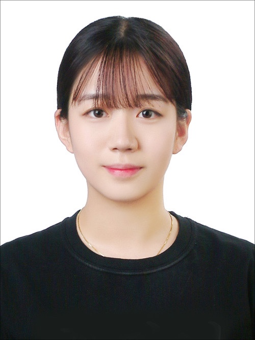
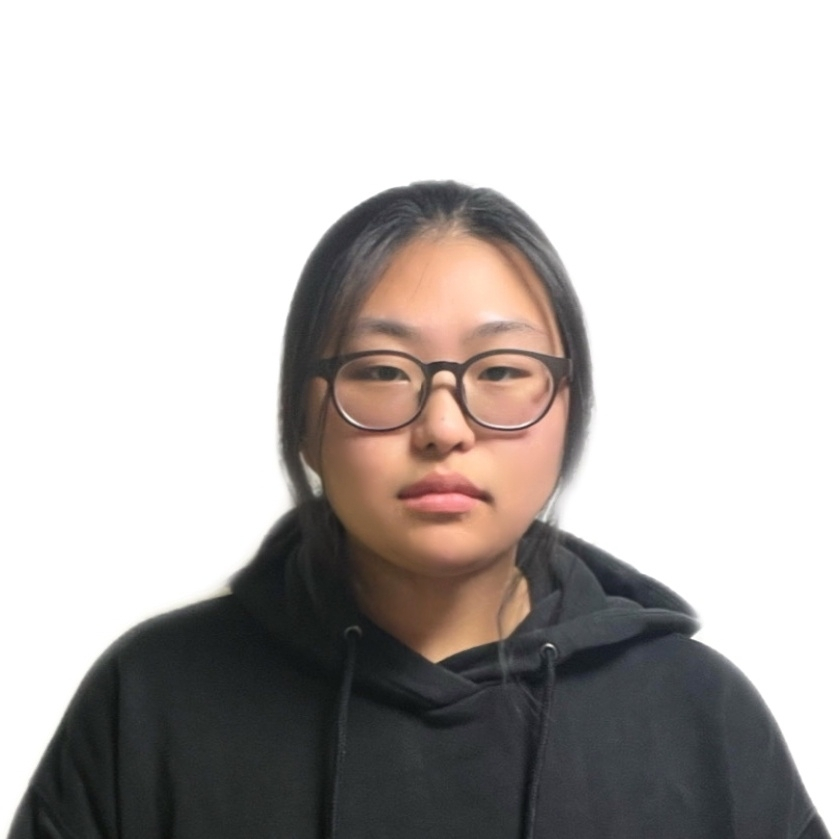

학생회
학생회란?
복지신학과 학생들의 학문 연구와 친교, 봉사, 선교를 활성화하는 것을 목적으로 조직된 학생자치조직입니다. 최우선적으로 학생들의 권익을 위하고, 진실한 섬김, 격려를 통한 네트워크 형성에 힘쓰고 있으며, 나아가서는, 미래에 올바른 사회복지인을 위한 커뮤니티 건설을 희망하고 있습니다. 다양한 활동과 행사를 통해서 진정한 학우들의 공동체를 만드는데 노력하겠습니다. 항상 복지신학과 학우들의 목소리에 귀 기울이고 학우들의 고민과 고충을 함께 해결해 나가는 복지신학과 학생회가 되겠습니다.
학생회 활동
복지신학과 학생회는 크게 다섯 개의 행정부서로 나뉘어 학생들의 공동체 활동을 돕고 있으며 연중 사업으로는 크게 오리엔테이션(O.T), 신입생 환영회, MT, 체육대회, 대동제(축제), 하민제 등이 있으며, 다음과 같은 일련의 행사들을 단과대학과 연합하여 기획 및 주최하며 학생들의 친목도모에 앞장서고 있습니다. 사회복지와 신학을 함께 배우는 복지신학과의 특성 상 학내수업과 병행하는 실습위주의 활동이 많기에 자치적으로 대외적인 활동을 기획, 진행하고 있습니다. 그리고 다양한 전공소모임 활동을 통해 전문 분야로서의 기술과 마인드를 형성합니다.
소개
| 학회장 16학번 김정연 | 안녕하십니까? 2021학년도 기독교사회복지학과 학생회 학회장 16학번 김정연입니다. 2021년 기독교복지신학과 학생회는 여러분의 목소리 하나하나에 귀 기울이며 여러분들의 의견이 적극적으로 반영될 수 있도록 노력하며, 학생들이 의지하고 신뢰할 수 있는 학생회가 될 수 있게 노력하겠습니다. 항상 학과를 위해 학우를 위해 헌신하고 봉사하는 학회장이 되겠습니다. |
|
|---|---|---|
| 부학회장 16학번 윤영철 | 안녕하십니까? 2021년 기독교사회복지학과 학생회 부학회장 16학번 윤영철 입니다. 학우님들께서 만들어주신 부학회장 자리에서 항상 노력하고 겸손한 자세로 임원진, 학우들과 소통하고 좋은 학업환경을 만들겠습니다. 기독교사회복지학과가 더욱더 발전할 수 있도록 노력하겠습니다. |
|
| 총무 17학번 오예닮 |  | 안녕하십니까? 2021학년도 기독교사회복지학과 학생회 총무 17학번 오예닮입니다. 학우 여러분들을 대신하여 총무라는 자리에서 우리과의 운영비가 알맞고, 올바른 곳에 사용되도록 관리하며 신입생 여러분을 포함한 모든 학우들께서 편안하고 즐거운 학교, 학과 생활을 하실 수 있도록 돕겠습니다. |
| 서기 18학번 김은별 | 안녕하십니까? 2021학년도 기독교사회복지학과 학생회 서기를 맡은 18학번 김은별이라고 합니다. 학생회 임원진들과 함께 원활한 소통을 통하여 학우 여러분들이 학교 생활에 어려움 없이 생활 할 수 있도록 노력 하겠습니다. |
|
| 신앙부장 | ||
| 콜팀장 | ||
| 콜팀 차장 | ||
| 봉사부 부장 18학번 김가영 | 안녕하십니까? 2021학년도 기독교사회복지과 학생회 봉사부 부장 18학번 김가영입니다. 봉사부부장이라는 직책을 믿고 맡겨주신 만큼 책임감을 가지고 열심히 봉사하겠습니다. 또한, 여러분들께 봉사의 기회를 제공하여 쉽게 다가갈 수 있도록 최선을 다하겠습니다. |
|
| 봉사부 차장 20학번 김다경 | 안녕하십니까? 2021학년도 복지신학과 학생회 봉사부 차장 20학번 김다경입니다. 봉사부 부장을 도와 봉사부와 기독교사회복지학과를 위해 맡은바 최선을 다하겠습니다. |
|
| 체육부 부장 17학번 김형진 | 안녕하십니까? 2021학년도 기독교사회복지학과 학생회 체육부 부장 17학번 김형진입니다. 체육부 부장으로서 학우분들의 활발한 교류,체력과 건강을 책임지겠습니다. 또한 학교 체육대회가 개최될 경우 모두의 화합을 통해 좋은 추억을 만들 수 있도록 노력하겠습니다. 끝으로 체육부를 위해 최선을 다하고 모두에게 인정받는 체육부 부장이 되도록 노력을 보이겠습니다. 감사합니다. |
|
| 체육부 차장 18학번 김현수 |  | 안녕하십니까? 2021학년도 기독교사회복지학과 학생회 체육부 차장 18학번 김현수 입니다. 학생회에서 체육부장과 함께 각종 체육활동과 행사에 맡은 책임을 다하겠습니다. 또한, 체육부 차장으로서 늘 최선을 다하며 학우 여러분들의 체력과 건강을 위해 힘쓰겠습니다. |